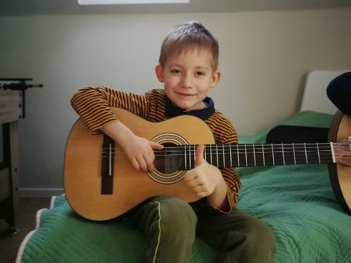

Jak uczymy
Poznaj nasze sprawdzone metody nauczania. Dlaczego nasze lekcje są efektywne?
Tradycyjne metody nauczania
Podczas naszych przygód z muzyką bardzo często spotykaliśmy się z restrykcyjnym podejściem do nauki gry na gitarze, którego głównym założeniem było korzystanie z szerokiej gamy materiałów dydaktycznych.
Zapis nutowy, którego podwaliny sięgają już XI wieku n.e., staje się zasobem przestarzałym, szczególnie w formie papierowej. Mnogość elementów, które składają się na partyturę, zwyczajnie przytłacza, szczególnie na początku drogi ucznia. W efekcie nie zastanawia się on, jak grać, ale nad tym, co oznacza dany znak nutowy oraz – ostatecznie – jak powinien być odegrany. To znacznie wydłuża drogę do kwestii najbardziej istotnej: świadomego grania. Ten styl nauczania ma jeszcze jedną, ale kluczową wadę – może skutecznie zniechęcić 😉
Samo opanowanie biegłego czytania nut wymaga poświęcenia czasu. Ostatecznie prowadzi częściej do frustracji niż do faktycznych, namacalnych i szybkich postępów w grze. Ponadto używanie zapisu nutowego w nadmiarze zabija kreatywność ucznia i samodzielne myślenie przy tworzeniu kompozycji, o improwizacji nie wspominając.
Inspiracja rodem z Hiszpanii
Nasza metoda nauczania jest inspirowana przede wszystkim sposobem przekazywania wiedzy przez gitarzystów hiszpańskich, którzy słyną z wyjątkowej techniki i poczucia rytmu. Trudno wskazać jej początki, jednak z pewnością upowszechniła się w Andaluzji w latach 70. XX wieku.
Taka forma nauczania jest niezwykle skuteczna. Wymaga skupienia zmysłów wzroku i słuchu, co w naturalny sposób rozwija wyobraźnię muzyczną, ale też wyrabia nawyk koncentracji i mobilizuje do szybkiego zapamiętania utworu.
Dlaczego metoda jest skuteczna?
W przeciwieństwie do większości nauczycieli w Polsce, podczas lekcji nie stawiamy na grę z nut lub tabulatur. Poznawanie techniki oraz utworów opiera się na pokazaniu uczniowi, jak powinien zagrać wybrany fragment. Następnie uczeń, dźwięk po dźwięku, powtarza za nauczycielem materiał. Po zajęciach przygotowywane są materiały do ćwiczeń w formie zapisu: tabulatur lub nut, oraz krótkiego filmu z poprawnym wykonaniem danego fragmentu.
Głównym założeniem metody jest uniknięcie żmudnego procesu opanowania nut i bezmyślnego grania z kartki. Materiały do samodzielnego ćwiczenia dziecko dostaje dopiero po zajęciach. Podczas lekcji interesuje nas koncentrowanie uwagi na technice gry i interpretacji utworu. Dzięki temu uczeń nie rozprasza się i nie traci energii na przyglądanie się zapisowi na papierze. Sprzyja to szybszemu zapamiętywaniu repertuaru, a sama nauka jest efektywna i przyjemna.
